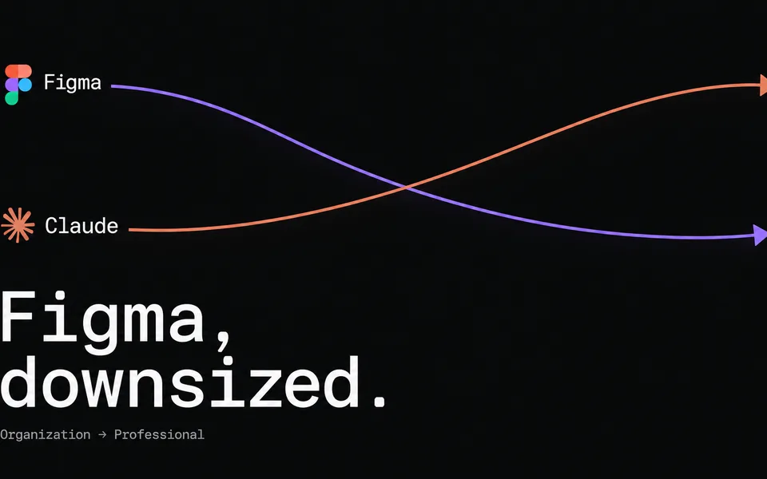

ARTICLE 01
Figma, 더 가볍게
코드로 옮겨간 디자인 시스템 관리.

SUMMARY
- 버즈빌은 이번 분기 Figma 계정을 Organization에서 Professional로 낮춰 달라고 요청했어요. LLM 활용이 일상이 되고 디자이너의 PR이 늘면서 Figma 파일과 Dev Mode 시트 필요가 줄었기 때문이에요.
- 디자이너 6명의 월별 PR은 3월 10건에서 8월 89건으로 늘었어요. 반복 사용 Figma 파일은 67개에서 35개로 약 48% 줄었고, 배정된 Dev 시트는 6월 말 23개에서 9월 4개가 됐어요.
- 글쓴이는 이 수치만으로 생산성을 판단할 수 없다고 선을 그어요. 핵심 변화는 디자이너가 리뷰 가능한 작동 코드와 미리보기를 엔지니어에게 넘기는 핸드오프 방식이에요.
LINK